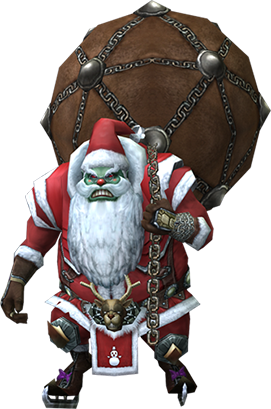

메인 이벤트 영역
로한 크리스마스 이벤트 Merry Christmas
로한 대륙에서 크리스마스를 준비하세요!2021년 12월 8일 점검 후 ~ 2022년 1월 12일 점검 전
본서버 전용 이벤트입니다. 시즌서버에서는 적용되지 않습니다.
1. 크리스마스 악동 처치&눈덩이 수집
세 종류의 크리스마스 악동들을 처치하고, 로한 대륙의 크리스마스를 준비하세요.- 악동 크리스마스 산타 - 등장 위치 : 드라트_7인의 성지
- 악동 크리스마스 고블린 - 등장 위치 : 드라트_NPC 나르페이 앞
- 악동 크리스마스 마법사 - 등장 위치 : 드라트_전사회 병영
- 각 지역별 악동 몬스터들은 05시, 11시, 17시, 23시에 소환됩니다.
- 지속적인 공격을 가하지 않거나, 몬스터 근처 지역을 벗어날 경우 퀘스트 진행이 제한될 수 있습니다.
- 악동 몬스터를 사냥하기 전 생산공방NPC(트렌드)를 통해 퀘스트를 획득하신 후 진행하시길 바랍니다.
- 이벤트 지역에서 PK 시 별도의 제재가 있을 수 있습니다.
눈덩이 - 크리스마스를 함께할 눈덩이입니다. 던지지 않고 트렌드에게 가져가면 다양한 아이템으로 교환 가능합니다.
NPC트렌드를 통해 다양한 아이템으로 교환하세요.| 퀘스트명 | 반복여부 | 대상 | 조건 | 보상 | 보상 거래여부 |
| 악동 처치! | 가능 | 모든 캐릭터 | 크리스마스 악동 각 2회 처치 | 용사의 강화석×10 | 불가 |
| 크리스마스의 온기 교환 | 가능 | 눈덩이×50 | 크리스마스의 온기×1 | ||
| 윈터 스케이팅 스크롤 교환 | 가능 | 눈덩이×50 | 윈터 스케이팅 스크롤×1 | ||
| 성장의 인장 교환 | 불가 | 눈덩이×150 | 봉인된 400% 성장의 인장(캐쉬)-7일×1 | ||
| 사냥 도우미 교환 | 불가 | 눈덩이×200 | 봉인된 사냥 도우미(30일)(거래불가)×1 |
- 
2. 따뜻한 손난로 강화
따뜻한 손난로 강화 레시피| 재료1 | 재료2 | 성공률 | 성공 시 | 실패 시 |
| (봉인된 따뜻한 손난로) | 크리스마스의 온기 | 50% | 강화레벨 +1 | 강화레벨 -1 |
| (봉인된 따뜻한 손난로) | 산타의 축복 | 50% | 강화레벨 +1 | 강화레벨 보존 |
- 성공 / 실패에 관계없이 크리스마스의 온기 / 산타의 축복은 소진됩니다.
- 따뜻한 손난로는 아이템몰에서 0캐시에 구매하실 수 있습니다.
| 강화단계 | 옵션 |
| 0 | 모든 능력치+10 |
| 1 | 모든 능력치+100 |
| 2 | 모든 능력치+200 |
| 3 | 모든 능력치+300 |
| 4 | 모든 능력치+400 |
| 5 | 모든 능력치+500 |
| 6 | 모든 능력치+600 |
| 7 | 모든 능력치+700 |
| 8 | 모든 능력치+800 |
| 9 | 모든 능력치+900 |
| 10 | 모든 능력치+1000, PVE 공격력 증가+10% |
| 아이템명 | 아이템 설명 | 가격 |
| 크리스마스의 온기(거래불가) | 따뜻한 손난로를 강화할 수 있는 재료입니다. 강화 실패 시 강화 수치가 하락합니다. | 500 캐시 |
| 산타의 축복(거래가능) | 따뜻한 손난로를 강화할 수 있는 재료입니다. 강화 실패 시 강화 수치가 허락하지 않습니다. | 5000 캐시 |
- 눈덩이 / 크리스마스의 온기 / 산타의 축복은 2022년 01년 12일 정기 점검 시 일괄 회수됩니다.
- 눈덩이는 엘레멘탈 / 애쉬키나 던전, 힘의 전장에서 드랍되지 않습니다.
- 봉인된 따뜻한 손난로 / 따뜻한 손난로는 2022년 02년 16일 정기 점검 시 일괄 회수됩니다.
- [용사의 강화석], [윈터 스케이팅 스크롤], [봉인된 400% 성장의 인장]은 이벤트가 종료되어도 회수되지 않습니다.
3. 크리스마스 기념 선물
크리스마스 당일(12월 25일) 아이템몰에서 구매하실 수 있습니다!- 빨간 겨울 산타 모자(3소캣)
- 빨간 겨울 산타복 3소켓
- 산타 선물A 패키지
- 산타 선물 패키지를 개봉하면 [트리안의 문양:모든 능력치] / [나투의 문양:모든 공격력] / [봉인된 태초의 기록지]를 획득하실 수 있습니다.
- 계정당 1회에 한하여 구매하실 수 있습니다.
- 구매하신 상품은 [몰 인벤토리]에서 확인하실 수 있습니다.